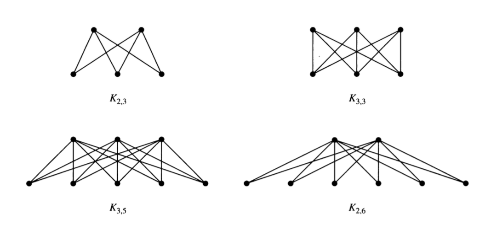

6 Bipartite Graphs
6.1 Definition
A simple graph \(G\) is biparatite if its vertices can be partitioned into two disjoint subsets \(V_1\) and \(V_2\) and every edge connects a vertex in \(V_1\) with a vertex in \(V_2\). The pair \(\langle V_1, V_2 \rangle\) is called a bipartition of \(G\).
6.2 Examples
- Which of the following are bipartite?
For what values of \(n\) are the following bipartite?
- \(K_n\)
- \(C_n\)
- \(Q_n\)
Can a bipartite graph have more than one bipartition? If so, give an example. If not, explain why not.
Describe an algorithm for checking whether a graph is bipartite. How efficient is your algorithm?
6.3 Complete Bipartite Graphs
A complete biparite graph \(K_{m,n}\) has two disjoint sets of vertices \(V_1\) and \(V_2\) with \(m\) and \(n\) elements. There is an edge between \(x\) and \(y\) if and only if \(x \in V_1\) and \(y \in V_2\) or \(x \in V_2\) and \(y \in V_1\).
Here are some examples.

- Draw the following graphs: \(K_{2,2}\), \(K_{4,2}\), \(K_{4,3}\)
7 Planar and Non-planar Graphs
A graph is a planar graph if it can be drawn in the plane with no edge crossings. [Note: You may need to rearrange the vertices and edges to avoid crossings.]
7.1 Euler and Planarity
We have already seen Euler’s Formula for Planar Graphs:
\[v - e + r = 1 + \mbox{number of connected components} \;,\] where \(v\) is the number of vertices, \(e\) the number of edges and \(r\) the number of regions.
In particular, for a connected graph we have \(v - e + r = 2\).
Show that the following are planar.
- \(K_{2,2}\)
- \(K_{2,3}\)
- \(K_{2,4}\)
Is \(K_{2,n}\) planar for every \(n\)?
Use Euler’s formula to show that \(K_5\) is not planar.
- How many vertices does \(K_5\) have?
- How many edges does \(K_5\) have?
- If \(K_5\) were planar, how many regions would it have?
- Show that \(K_5\) can’t have that number of regions, so it must not be planar.
Use Euler’s formula to show that \(K_{3,3}\) is not planar.
7.2 Kuratowski’s Theorem
The proof of the following theorem is too involved for this course, but it turns out that all nonplanar graphs contain a “homeomorphic copy” of either \(K_{5}\) or \(K_{3,3}\).
Kuratowski’s Theoerm: A graph \(G\) is nonplanar if and only if it contains a subgraph \(H\) that is homeomorphic to either \(K_5\) or \(K_{3,3}\).
an elementary subdivision of a graph \(G\) removes one edge \((u, v)\) and adds a new vertex \(n\) and two new edges \((u,n)\) and \((v,n)\).
a subdivision of a graph \(G\) is the result of performing 0 or more elementary subdivisions, starting from \(G\).
two graphs are homeomorphic if some subdivision of one is isomorphic to some subdivision of the other.
Create a graph with 5 vertices and 7 edges. Now perform three elementary subdivisions on your graph.
Describe what an elementary subdivision is in simple words a kindergarterner could understand.
Explain why two homeomorphic graphs are either both planar or both nonplanar.
Use Kuratowski’s Theorem to show that the Petersen graph is nonplanar.
There is more than one way to do this, but if you are having trouble, here are some things you could try.
Frist, decide whether you are looking for a version of \(K_5\) or a version of of \(K_3,3\) inside the Petersen graph. (It’s pretty easy to give an argument that one of these two will not work. Identifying which graph to work with will save you going down a wrong path right from the start.)
Now see if you can identify
- the 5 or 6 vertices in the Petersen graph that will corresponsd to the vertices in \(K_5\) or \(K_{3,3}\).
- any vertices or edges that you will remove from the Petersen graph. (We only need to work with a subgraph, so we are allowed to remove things if they get in the way.)
- any vertices in the Petersen graph that will remain, but not be one of the vertides corresponding to \(K_5\) or \(K_{3,3}\). These must be the vertices invovled in subdivisions.
There may be some trial and error involved here.
When you think have identified everything correctly, double check to make sure the you have the correct structure for \(K_5\) or \(K_{3,3}\).

- Show that the Petersen graph is not planar without using Kuratowski’s Theorem.